대기환경기사 (2016-10-01 기출문제)
1과목: 대기오염 개론
1. 따뜻한 공기가 찬 지표면이나 수면 위를 불어갈 때 따뜻한 공기의 하층이 찬 지표면 수면에 의해 냉각되어 발생하는 역전의 형태는?
- 접지역전
- 침강역전
- 전선역전
- 해풍역전
(정답률: 71%)

2. 유효고 50m인 굴뚝에서 NO가 200g/sec의 속도로 배출되고 있다. 굴뚝 유효고에서의 풍속은 10m/sec일 때, 500m 풍하방향 중심선상 지표면에서의 NO 농도는? (단, σy=30m, σz=15m)
- 약 3㎍/m3
- 약 5㎍/m3
- 약 27㎍/m3
- 약 55㎍/m3
(정답률: 48%)
3. 대기의 안정도와 관련된 리차드슨수(Ri)를 나타낸 식으로 옳은 것은?(단, g: 그 지역의 중력가속도, θ: 잠재온도, u: 풍속, z: 고도)
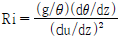
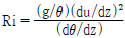
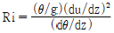
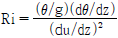
(정답률: 66%)
4. 광화학반응의 주요 생성물 중 PAN(Peroxyacetyl nitrate)의 화학식을 옳게 나타낸 것은?
- CH3CO2N4O2
- CH3C(O)O2NO2
- C5H11C(O)O2N4O2
- C5H11CO2NO2
(정답률: 83%)
5. 산성비에 대한 다음 설명 중 ( )안에 가장 적당한 말은?
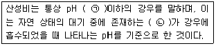
- ㉠ 7, ㉡ CO2
- ㉠ 7, ㉡ NO2
- ㉠ 5.6, ㉡ CO2
- ㉠ 5., ㉡ NO2
(정답률: 83%)
6. 다음 가스 중 혈액 내의 헤모글로빈(Hb)과 가장 결합력이 강한 물질은?
- CO
- O2
- NO
- CS2
(정답률: 77%)
7. 최대혼합고(MMD)에 관한 설명으로 옳지 않은 것은?
- 통상적으로 밤에 가장 낮으며, 낮시간 동안 증가한다.
- 야간 극심한 역전 하에서는 0 이 될 수도 있다.
- 낮시간 동안에는 통상 20~30m의 값을 나타낸다.
- 실제 MMD는 지표 위 수 km 까지 실제공기의 온도종단도를 작성함으로써 결정된다.
(정답률: 77%)
8. 로스앤젤레스 스모그 사건에 대한 설명 중 틀린 것은?
- 대기는 침강성 역전 상태였다.
- 주 오염성분은 NOx, O3, PAN, 탄화수소 이다.
- 광화학적 및 열적 산화반응을 통해서 스모그가 형성되었다.
- 주 오염 발생원은 가정 난방용 석탄과 화력발전소의 매연이다.
(정답률: 82%)
9. 1~2㎛ 이하의 미세입자는 세정(Rain out)효과가 작은데 그 이유로 가장 적합한 것은?
- 응축효과가 크기 때문에
- 휘산효과가 크기 때문에
- 부정형의 입자가 많기 때문에
- 브라운 운동을 하기 때문에
(정답률: 84%)
10. 벤젠에 관한 설명으로 옳지 않은 것은?
- 체내에 흡수된 벤젠은 지방이 풍부한 피하조직과 골수에서 고농도로 축적되어 오래 잔존할 수 있다.
- 체내에서 마뇨산(Hippuric acid)으로 대사하여 소변으로 배설된다.
- 비점은 약 80℃ 정도이고, 체내 흡수는 대부분 호흡기를 통하여 이루어진다.
- 벤젠 폭로에 의해 발생되는 백혈병은 주로 급성 골수아성 백혈병(Acute myeloblastic leukemia)이다.
(정답률: 81%)
11. 다환 방향족 탄화수소(Polycyclic Aromatic Hydrocarbons, PAH)에 관한 설명으로 가장 거리가 먼 것은?
- 대부분 PAH는 물에 잘 용해되며, 산성비의 주요원인물질로 작용한다.
- 대부분 공기역학적 직경이 2.5㎛ 미만인 입자상 물질이다.
- 석탄, 기름, 가스, 쓰레기, 각종 유기물질의 불완전 연소가 일어나는 동안에 형성된 화학물질 그룹이다.
- 고리 형태를 갖고 있는 방향족 탄화수소로서 미량으로도 암 및 돌연변이를 일으킬 수 있다.
(정답률: 70%)
12. A도시의 먼지 농도를 측정하기 위하여 공기를 여과지를 통하여 0.4m/s의 속도로 3시간 동안 여과시킨 결과 깨끗한 여과지에 비해 사용된 여가지의 빛 전달율이 80%이었다. 이 때 1000m당의 Coh는 약 얼마인가?
- 1.25
- 1.50
- 2.25
- 4.32
(정답률: 55%)
13. 등압면이 직선이 아닌 곡선일 때에 부는 바람인 경도풍은 3가지 힘이 평형을 이루고 있을 때 나타난다. 이 3가지 힘으로 가장 적합한 것은?
- 마찰력, 전향력, 원심력
- 기압경도력, 전향력, 원심력
- 기압경도력, 마찰력, 원심력
- 기압경도력, 전향력, 마찰력
(정답률: 76%)
14. 굴뚝높이 50m, 배출 연기온도 200℃, 배출 연기속도 30m/s, 굴뚝직경이 2m인 화력발전소가 있다. 지금 주변 대기온도가 20℃이고, 굴뚝 배출구에서 대기 풍속이 10m/s이며, 대기압은 1000mb인 조건에서 다음 Holland식을 이용한 연기의 유효굴뚝높이는?
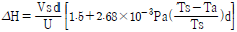
- 약 71m
- 약 85m
- 약 93m
- 약 21m
(정답률: 54%)
15. 상자모델을 전개하기 위하여 설정된 가정으로 가장 거리가 먼 것은?
- 오염물은 지면의 한 지점에서 일정하게 배출된다.
- 고려된 공간에서 오염물의 농도는 균일하다.
- 오염물의 분해는 일차반응에 의한다.
- 고려되는 공간의 수직단면에 직각방향으로 부는 바람의 속도가 일정하여 환기량이 일정하다.
(정답률: 63%)
16. 대기오염물질별로 지표식물을 짝지은 것으로 가장 거리가 먼 것은?
- HF - 알팔파
- SO2 - 담배
- O3 - 시금치
- NH3 - 해바라기
(정답률: 59%)
17. 태양복사의 산란에 관한 다음 설명 중 가장 거리가 먼 것은?
- 레일리산란의 경우 그 세기는 파장의 2승에 반비례한다.
- 산란의 세기는 입사되는 빛의 파장(λ)에 대한 입자크기(반경)의 비에 의해 결정된다.
- 입자의 크기가 입사되는 빛의 파장에 비해 아주 작게 되면 레일리산란이 발생한다.
- 맑은 날 하늘이 푸르게 보이는 이유는 레일리산란 특성에 의해 파장이 짧은 청색광이 긴 적색광보다 더욱 강하게 산란되기 때문이다.
(정답률: 70%)
18. 질소산화물에 관한 설명으로 거리가 먼 것은?
- 아산화질소(N2O)는 성층권의 오존을 분해하는 물질로 알려져 있다.
- 아산화질소(N2O)는 대류권에서 태양에너지에 대하여 매우 안정하다.
- 전세계의 질소화합물 배출량 중 인위적인 배출량은 자연적 배출량의 약 70% 정도 차지하고 있으며, 그 비율은 점차 증가하는 추세이다.
- 연료 NOx는 연료 중 질소화합물 연소에 의해 발생되고, 연료 중 질소화합물은 일반적으로 석탄에 많고 중유, 경유 순으로 적어진다.
(정답률: 70%)
19. 다음 중 세류현상(down wash)이 발생하지 않는 조건으로 가장 적절한 것은?
- 굴뚝높이에서의 풍속이 오염물질 토출속도의 1.5배 이상일 때
- 굴뚝높이에서의 풍속이 오염물질 토출속도의 2.0배 이상일 때
- 오염물질의 토출속도가 굴뚝높이 풍속의 1.5배 이상일 때
- 오염물질의 토출속도가 굴뚝높이 풍속의 2.0배 이상일 때
(정답률: 64%)
20. 대기오염물질과 그 발생원의 연결로 가장 거리가 먼 것은?
- 페놀 - 타르공업, 도장공업
- 암모니아 - 소다공업, 인쇄공장, 농약제조
- 시안화수소 - 청산제조업, 가스공업, 제철공업
- 아황산가스 - 용광로, 제련소, 석탄화력발전소
(정답률: 68%)
2과목: 연소공학
21. 액화석유가스(LPG)에 대한 설명으로 옳지 않은 것은?
- 황분이 적고 유독성분이 거의 없다.
- 사용에 편리한 기체연료의 특징과 수송 및 저장에 편리한 액체연료의 특징을 겸비하고 있다.
- 천연가스에서 회수되기도 하지만 대부분은 석유정제 시 부산물로 얻어진다.
- 비중이 공기보다 가벼워 누출될 경우 인화 폭발 위험성이 크다.
(정답률: 76%)
22. COM(Coal oil mixture), 즉 혼탄유 연소 특징으로 옳지 않은 것은?
- COM은 주로 석탄과 중유의 혼합연료이다.
- 배출가스 중의 NOx, SOx, 분진농도는 미분탄연소와 중유연소 각각인 경우 농도가중 평균 정도가 된다.
- 화염길이가 중유연소인 경우에 가까운 것에 대하여 화염안정성은 미분탄연소인 경우에 가깝다.
- 중유보다 미립화 특성이 양호하다.
(정답률: 59%)
23. 중유조성이 탄소 87%, 수소 11%, 황 2% 이었다면 이 중유연소에 필요한 이론 습연소 가스량(Sm3/kg)은?
- 9.63
- 11.35
- 12.96
- 13.62
(정답률: 64%)
24. 프로판(C3H8) 1Sm3을 완전연소시켰을 때 건조연소가스 중의 CO2 농도는 11%이었다. 공기비는 약 얼마인가?
- 1.⑤
- 1.15
- 1.23
- 1.39
(정답률: 55%)
25. 액체연료인 석유의 물성치에 관한 설명으로 옳지 않은 것은?
- 석유류의 증기압이 큰 것은 착화점이 낮아서 위험하다.
- 석유류의 인화점은 휘발유 -50℃~0℃, 등유 30℃~70℃, 중유 90℃~120℃ 정도이다.
- 석유의 비중이 커지면 탄화수소비(C/H)가 증가하고, 발열량이 감소한다.
- 석유의 동점도가 감소하면 끓는점이 높아지고 유동성이 좋아지며 이로 인하여 인화점이 높아진다.
(정답률: 49%)
26. 기체연료의 연소방식과 연소장치에 관한 설명으로 옳지 않은 것은?
- 확산연소는 주로 탄화수소가 적은 발생로가스, 고로가스 등에 적용되는 연소방식이다.
- 예혼합연소는 화염온도가 낮아 국부가열의 염려가 없고 연소부하가 작은 경우 사용이 가능하며, 화염의 길이가 길다.
- 저압버너는 역화방지를 위해 1차 공기량을 이론공기량의 약 60% 정도만 흡입하고 2차 공기는 로내의 압력을 부압으로 하여 공기를 흡인한다.
- 예혼합연소에 사용되는 버너에는 저압버너, 고압버너, 송풍버너 등이 있다.
(정답률: 74%)
27. A석탄을 사용하여 가열로의 배출가스를 분석한 결과 CO2 14.5%, O2 6%, N2 79%, CO 0.5%이었다. 이 경우의 공기비는?
- 1.18
- 1.38
- 1.58
- 1.78
(정답률: 65%)
28. C 85%, H 15%의 액체연료를 100kg/h로 연소하는 경우, 연소 배출가스의 분석결과가 CO2 12%, O2 4%, N2 84%이었다면 실제연소용 공기량은? (단, 표준상태 기준)
- 약 1160 Sm3/h
- 약 1410 Sm3/h
- 약 1620 Sm3/h
- 약 1730 Sm3/h
(정답률: 55%)
29. A기체연료 2Sm3을 분석한 결과 C3H8 1.7Sm3, CO 0.15Sm3, H2 0.14Sm3, O2 0.01Sm3였다면 이 연료를 완전연소 시켰을 때 생성되는 이론습연소가스량(Sm3)은?
- 약 41 Sm3
- 약 45 Sm3
- 약 52 Sm3
- 약 57 Sm3
(정답률: 40%)
30. 기체연료 중 연소하여 수분을 생성하는 H2와 CxHy 연소반응의 발열량 산출식에서 아래의 480 이 의미하는 것은?
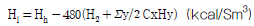
- H2O 1kg의 증발잠열
- H2 1kg의 증발잠열
- H2O 1Sm3의 증발잠열
- H2 1Sm3의 증발잠열
(정답률: 73%)
31. 다음 중 디젤노킹(diesel knocking) 방지법으로 가장 거리가 먼 것은?
- 착화지연 기간 및 급격연소 시간의 분사량을 감소시킨다.
- 급기온도를 높인다.
- 기관의 압축비를 크게 하여 압축압력을 높게한다.
- 회전속도를 높인다.
(정답률: 54%)
32. 다음 중 연료의 연소과정에서 공기비가 낮을 경우 예상되는 문제점으로 가장 적합한 것은?
- 배출가스에 의한 열손실이 증가한다.
- 배출가스 중 CO와 매연이 증가한다.
- 배출가스 중 SOx와 NOx의 발생량이 증가한다.
- 배출가스의 온도저하로 저온부식이 가속화된다.
(정답률: 67%)
33. 기체연료의 이론공기량(Sm3/Sm3)을 구하는 식으로 옳은 것은? (단, H2, CO, CxHy, O2는 연료 중의 수소, 일산화탄소, 탄화수소, 산소의 체적비를 의미한다.)
- 0.21{0.5H2+0.5CO+(x+y/4)CxHy-O2}
- 0.21{0.5H2+0.5CO+(x+y/4)CxHy+O2}
- 1/0.21{0.5H2+0.5CO+(x+y/4)CxHy-O2}
- 1/0.21{0.5H2+0.5CO+(x+y/4)CxHy+O2}
(정답률: 71%)
34. 1.5%(무게기준) 황분을 함유한 석탄 1143kg을 이론적으로 완전연소시킬 때 SO2 발생량은? (단, 표준상태 기준이며, 황분은 전량 SO2로 전환된다.)
- 12 Sm3
- 18 Sm3
- 21 Sm3
- 24 Sm3
(정답률: 58%)
35. 폐가스 소각과 관련한 다음 설명 중 가장 거리가 먼 것은?
- 직접화염 재연소기의 설계 시 반응시간은 1~3초 정도로 하고, 이 방법은 다른 방법에 비해 NOx 발생이 적다.
- 직접화염 소각은 가연성 폐가스의 배출량이 많은 경우에 유용하다.
- 촉매산화법은 고온연소법에 비해 반응온도가 낮은 편이다.
- 촉매산화법은 저농도의 가연물질과 공기를 함유하는 기체 폐기물에 대하여 적용되며 백금 및 팔라듐 등이 촉매로 쓰인다.
(정답률: 49%)
36. 그을음 발생에 관한 설명으로 옳지 않은 것은?
- 분해나 산화하기 쉬운 탄화수소는 그을음 발생이 적다.
- C/H비가 큰 연료일수록 그을음이 잘 발생된다.
- 탈수소보다 -C-C-의 탄소결합을 절단하는 것이 용이한 연료일수록 잘 발생된다.
- 발생빈도의 순서는'천연가스 ＜ LPG ＜ 제조가스 ＜ 석탄가스 ＜ 코크스'이다.
(정답률: 63%)
37. 연소 시 매연 발생량이 가장 적은 탄화수소는?
- 나프텐계
- 올레핀계
- 방향족계
- 파라핀계
(정답률: 59%)
38. C=78(중량%), H=18(중량%), S=4(중량%)인 중유의 (CO2)max은 약 몇 %인가? (단, 표준상태, 건조가스 기준)
- 20.6
- 17.6
- 14.8
- 13.4
(정답률: 49%)
39. C=82%, H=15%, S=3%의 조성을 가진 액체연료를 2kg/min으로 연소시켜 배기가스를 분석하였더니 CO2=12.0%, O2=5%, N2=83%라는 결과를 얻었다. 이 때 필요한 연소용 공기량(Sm3/hr)은?
- 약 1100
- 약 1300
- 약 1600
- 약 1800
(정답률: 45%)
40. 다음 중 폭굉유도거리가 짧아지는 요건으로 거리가 먼 것은?
- 정상의 연소속도가 작은 단일가스인 경우
- 관속에 방해물이 있거나 관내경이 작을수록
- 압력이 높을수록
- 점화원의 에너지가 강할수록
(정답률: 54%)
3과목: 대기오염 방지기술
41. Bag filter에서 먼지부하가 360g/m2일 때마다 부착먼지를 간헐적으로 탈락시키고자 한다. 유입가스 중의 먼지농도가 10g/m3이고, 겉보기 여과속도가 1cm/sec일 때 부착먼지의 탈락시간 간격은? (단, 집진율은 80%이다.)
- 약 0.4 hr
- 약 1.3 hr
- 약 2.4 hr
- 약 3.6 hr
(정답률: 56%)
42. 목(throat) 부분의 지름이 30cm인 Venturi Scrubber를 사용하여 360m3/min의 함진가스를 처리할 때, 320L/min의 세정수를 공급할 경우 이 부분의 압력손실(mmH2O)은? (단, 가스밀도는 1.2kg/m3이고, 압력손실계수는 [0.5+액가스비] 이다.)
- 약 545
- 약 575
- 약 615
- 약 665
(정답률: 32%)
43. 선택적 촉매환원(SCR)법과 선택적 비촉매환원(SNCR)법이 주로 제거하는 오염물질은?
- 휘발성유기화합물
- 질소산화물
- 황산화물
- 악취물질
(정답률: 66%)
44. 휘발유 자동차의 배출가스를 감소하기 위해 적용되는 삼원촉매 장치의 촉매물질 중 환원촉매로 사용되고 있는 물질은?
- Pt
- Ni
- Rh
- Pd
(정답률: 61%)
45. 액측 저항이 클 경우에 이용하기 유리한 가스분산형 흡수장치는?
- 충전탑
- 다공판탑
- 분무탑
- 하이드로필터
(정답률: 54%)
46. 흡수에 의한 가스상 물질의 처리장치로 거리가 먼 것은?
- 충전탑
- 분무탑
- 다공판탑
- 활성 알루미나탑
(정답률: 51%)
47. 굴뚝(연돌)에서 피토우관을 사용하여 배출가스의 유속을 구하고자 측정한 결과가 아래 [보기]와 같을 때, 이 굴뚝에서의 배출가스 유속은?
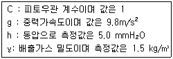
- 약 5m /s
- 약 6m /s
- 약 7m /s
- 약 8m /s
(정답률: 56%)
48. 여과집진장치의 특성으로 옳지 않은 것은?
- 다양한 여과재의 사용으로 인하여 설계 시 융통성이 있다.
- 여과재의 교환으로 유지비가 고가이다.
- 수분이나 여과속도에 대한 적응성이 높다.
- 폭발성, 점착성 및 흡습성 먼지의 제거가 곤란하다.
(정답률: 58%)
49. 활성탄에 SO2를 흡착시키면 황산이 생성된다. 이를 탈착시키는 방법 중 활성탄 소모나 약산이 생성되는 단점을 극복하기 위해 H2S 또는 CS2를 반응시켜 단체의 S를 생성시키는 방법은?
- 세척법
- 산화법
- 환원법
- 촉매법
(정답률: 57%)
50. 흡수탑의 충전물에 요구되는 사항으로 거리가 먼 것은?
- 단위 부피내의 표면적이 클 것
- 간격의 단면적이 클 것
- 단위 부피의 무게가 가벼울 것
- 가스 및 액체에 대하여 내식성이 없을 것
(정답률: 62%)
51. 충전탑(Packed Tower)과 단탑(Plate tower)을 비교 설명한 것으로 가장 거리가 먼 것은?
- 포말성 흡수액일 경우 충전탑이 유리하다.
- 흡수액에 부유물이 포함되어 있을 경우 단탑을 사용하는 것이 더 효율적이다.
- 온도 변화에 따른 팽창과 수축이 우려될 경우에는 충전제 손상이 예상되므로 단탑이 유리하다.
- 운전 시 용매에 의해 발생되는 용해열을 제거해야 할 경우 냉각오일을 설치하기 쉬운 충전탑이 유리하다.
(정답률: 59%)
52. 냄새물질의 화학구조에 대한 설명으로 가장 거리가 먼 것은?
- 골격이 되는 탄소수는 저분자일수록 관능기 특유의 냄새가 강하고 자극적이나 8~13에서 가장 냄새가 강하다.
- 불포화도(2중결합 및 3중결합의 수)가 높으면 냄새가 보다 강하게 난다.
- 락톤 및 케톤화합물은 환상이 크게 되면 냄새가 강해진다.
- 분자 내 수산기의 수가 증가할수록 냄새가 강하다.
(정답률: 68%)
53. 직경이 500mm인 관에 60m3/min의 공기가 통과한다면 공기의 이동속도는?
- 5.1 m/sec
- 5.7 m/sec
- 6.2 m/sec
- 6.9 m/sec
(정답률: 49%)
54. 질산공장의 배출가스 중 NO2 농도가 80ppm, 처리가스량이 1000 Sm3 이었다. CO에 의한 비선택적 접촉환원법으로 NO2를 처리하여 NO와 CO2로 만들고자 할 때, 필요한 CO의 양은?
- 0.04 Sm3
- 0.08 Sm3
- 0.16 Sm3
- 0.32 Sm3
(정답률: 44%)
55. 관성력 집진장치에 관한 설명으로 옳지 않은 것은?
- 압력손실은 30~70mmH2O 정도이고, 굴뚝 또는 배관에 적용될 때가 있다.
- 곡관형, louver형, pocket형, multibaffle형 등은 반전식에 해당한다.
- 함진가스의 방향 전환각도가 크고, 방향 전환횟수가 적을수록 압력손실은 커지나 집진율이 높아진다.
- 반전식의 경우 방향전환을 하는 가스의 곡률반경이 작을수록 미세한 먼지를 분리포집할 수 있다.
(정답률: 54%)
56. 불화수소농도가 250ppm인 굴뚝 배출가스량 1000Sm3/h를 10m3의 물로 10시간 순환 세정할 경우, 순환수의 pH는? (단, 불화수소는 60%가 전리하고, 불소의 원자량은 19)
- 2.18
- 2.48
- 2.72
- 2.94
(정답률: 27%)
57. 먼지의 발생원을 자연적 및 인위적으로 구분할 때, 그 발생원이 다른 것은?
- 질소산화물과 탄화수소의 반응에 의해 0.2㎛이하의 입자가 발생한다.
- 화산의 폭발에 의해서 분진과 SO2가 발생한다.
- 사막지역과 같이 지면의 먼지가 바람에 날릴 경우 통상 0.3㎛ 이상의 입자상 물질이 발생한다.
- 자연적으로 발생한 O3과 자연대기 중 탄화수소(HC) 간의 광화학적 기체반응에 의해 0.2㎛ 이하의 입자가 발생한다.
(정답률: 57%)
58. 송풍기를 원심력형과 축류형으로 분류할 때 다음 중 축류형에 해당하는 것은?
- 프로펠러형
- 방사경사형
- 비행기날개형
- 전향날개형
(정답률: 54%)
59. VOCs의 종류 중 지방족 및 방향족 HC를 처리하기 위해 적용하는 제어기술로 가장 거리가 먼 것은?
- 흡수
- 생물막
- 촉매소각
- UV 산화
(정답률: 45%)
60. 여과집진장치의 탈진방식 중 간헐식에 관한 설명으로 옳지 않은 것은?
- 연속식에 비하여 먼지의 재비산이 적고, 높은 집진율을 얻을 수 있다.
- 대량의 가스의 처리에 적합하며, 점성있는 조대먼지의 탈진에 효과적이다.
- 간헐식 중 진동형은 여포의 음파진동, 횡진동, 상하진동에 의해 포집된 먼지층을 털어내는 방식이다.
- 집진실을 여러 개의 방으로 구분하고 방 하나씩 처리가스의 흐름을 차단하여 순차적으로 탈진하는 방식이며, 여포의 수명은 연속식에 비해 길다.
(정답률: 64%)
4과목: 대기오염 공정시험기준(방법)
61. 이온크로마토그래프법(Ion Chromatography)에 사용되는 장치에 관한 설명으로 옳지 않은 것은?
- 용리액조는 이온성분이 용출되지 않는 재질로서 용리액이 공기와 원활한 접촉이 가능한 개방형을 선택한다.
- 송액펌프는 맥동이 적은 것을 선택한다.
- 시료주입장치는 일정량의 시료를 밸브조작에 의해 분리관으로 주입하는 루프주입방식이 일반적이다.
- 검출기는 분리관 용리액 중의 시료성분의 유무와 양을 검출하는 부분으로 일반적으로 전도도 검출기를 많이 사용한다.
(정답률: 60%)
62. 특정 발생원에서 일정한 굴뚝을 거치지 않고 외부로 비산 배출되는 먼지를 고용량공기시료채취법으로 측정하는 방법에 관한 설명으로 옳지 않은 것은?
- 시료채취장소는 원칙적으로 측정하려고 하는 발생원의 부지경계선상에 선정 하며 풍향을 고려하여 그 발생원의 비산먼지 농도가 가장 높을 것으로 예상되는 지점 3개소 이상을 선정한다.
- 시료채취장소 별도로 발생원의 위(Upstream)인 바람의 방향을 따라 대상 발생원의 영향이 없을 것으로 추측되는 곳에 대조위치를 선정한다.
- 그 지역을 대표할 수 있는 지점에 풍향풍속계를 설치하여 전 채취시간 동안의 풍향풍속을 기록하고, 연속기록 장치가 없을 경우에는 적어도 30분 간격으로 여러지점에서 3회 이상 풍향풍속을 측정하여 기록한다.
- 풍속이 0.5m/s 미만 또는 10m/s 이상되는 시간이 전 채취시간의 50% 미만일 때 풍속에 대한 보정계수는 1.0이다.
(정답률: 61%)
63. 폐기물 소각로에서 배출되는 다이옥신류의 최종배출구에서 시료채취 시 흡인가스량으로 가장 적합한 것은? (단, 기타사항은 고려하지 않는다.)
- 4시간 평균 3Nm3 이상
- 2시간 평균 1Nm3 이상
- 2시간 평균 0.5Nm3 이상
- 4시간 평균 2Nm3 이상
(정답률: 48%)
64. 굴뚝 배출가스 내의 시안화수소 분석방법 중 질산은 적정법에서 분석용 시료용액에 수산화소듐용액(질량분율 2%) 또는 아세트산(부피분율 10%)을 첨가하여 pH미터를 써서 pH를 조절한 후 적정하여야 하는데 이 때 조절하고자 하는 pH 값은?(관련 규정 개정전 문제로 여기서는 기존 정답인 4번을 누르면 정답 처리됩니다. 자세한 내용은 해설을 참고하세요.)
- 5~6
- 7
- 8~10
- 11~12
(정답률: 39%)
65. 기체크로마토그래피법에 관한 설명으로 옳지 않은 것은?
- 분리관오븐의 온도조절 정밀도는 ±0.5℃의 범위 이내 전원 전압변동 10%에 대하여 온도변화 ±0.5℃ 범위 이내(오븐의 온도가 150℃ 부근일 때)이어야 한다.
- 보유시간을 측정할 때는 2회 측정하여 그 평균치를 구하며 일반적으로 5~30분 정도에서 측정하는 피이크의 보유시간은 반복시험을 할 때 ±5% 오차범위 이내이어야 한다.
- 분리관유로는 시료도입부, 분리관, 검출기기배관으로 구성된다.
- 가스 시료도입부는 가스계량관(통상 0.5mL~5mK)과 유로변환기구로 구성된다.
(정답률: 66%)
66. 원형굴뚝의 반경이 0.85m일 때 측정점 수는 몇 개인가?
- 4
- 8
- 12
- 20
(정답률: 61%)
67. 굴뚝 배출가스 중 일산화탄소를 정전위전해법으로 분석하고자 할 때 주요 성능기준에 관한 설명으로 옳지 않은 것은?(관련 규정 개정전 문제로 여기서는 기존 정답인 1번을 누르면 정답 처리됩니다. 자세한 내용은 해설을 참고하세요.)
- 적용범위 : 적용범위는 최고 5% 이다.
- 드리프트 : 재현성은 측정범위 최대 눈금값의 ±2% 이내로 한다.
- 드리프트 : 고정형은 24시간, 이동형은 4시간 연속 측정하여 제로 드리프트 및 스팬드리프트는 어느 것이나 최대 눈금값의 ±2% 이내로 한다.
- 응답시간 : 90% 응답 시간은 2분 30초 이내로 한다.
(정답률: 64%)
68. 다음 중 흡광도를 측정하기 위한 순서로 원칙적으로 제일 먼저 행하여야 할 행위는?
- 시료셀과 대조셀을 넣고 눈금판의 지시치의 차이를 확인한다.
- 광로를 차단 후 대조셀로 영점을 맞춘다.
- 광원으로부터 광속을 통하여 눈금 100에 맞춘다.
- 눈금판의 지시 안정 여부를 확인한다.
(정답률: 65%)
69. 수산화소듐(NaOH)용액을 흡수액으로 사용하는 분석대상가스가 아닌 것은?
- 염화수소
- 브롬화합물
- 불소화합물
- 벤젠
(정답률: 62%)
70. 굴뚝 배출가스 중의 염화수소를 싸이오안산제2수은 자외선/가시선분광법으로 측정하는 방법에 관한 설명으로 옳지 않은 것은?
- 흡수액은 수산화소듐용액을 사용한다.
- 이산화황, 기타 할로겐화물, 시안화물 및 황화물의 영향이 무시될 때 적당하다.
- 하이포염소산소듐용액으로 적정한다.
- 시료채취관은 유리관, 석영관, 불소수지관 등을 사용한다.
(정답률: 47%)
71. 굴뚝 배출가스 내의 휘발성유기화합물(Volatile Organic Compounds, VOCs) 시료채취장치 중 흡착관법에 관한 설명으로 가장 거리가 먼 것은?
- 채취관의 재질은 유리, 불소수지 등으로 120℃ 이상까지 가열이 가능한 것 이어야 한다.
- 응축기는 유리재질이어야 하며 앞쪽 흡착관을 통과한 후에 위치하여 가스를 50℃ 이하로 낮출 수 있는 용량이어야 한다.
- 흡착관은 사용하기 전 반드시 안정화(컨디셔닝) 단계를 거쳐야 한다.
- 유량측정부는 기기의 온도 및 압력측정이 가능해야 하며 최소 100mL/min의 유량으로 시료채취가 가능해야 한다.
(정답률: 45%)
72. 굴뚝배출 가스 내의 염소가스 분석방법 중 오르토톨리딘법에 관한 설명으로 옳은 것은?
- 염소표준 착색액으로 요오드산 칼륨용액을 사용한다.
- 염소표준용액은 N/100 KMnO4 용액으로 표정한다.
- 시료는 1L/min의 흡인속도로 채취한다.
- 약 20℃에서 5~20분 사이에 분석용 시료를 10mm 셀에 취한다.
(정답률: 30%)
73. 환경대기 중 아황산가스 농도 측정방법 중 자동연속측정법은?
- 비분산 적외선 분석법
- 수소염 이온화 검출기법
- 광 산란법
- 자외선 형광법
(정답률: 49%)
74. 환경대기 중 벤조(a)피렌 농도를 측정하기 위한 주시험방법으로 가장 적합한 것은?
- 이온크로마토그래프법
- 가스크로마토그래프법
- 흡광차분광법
- 용매포집법
(정답률: 47%)
75. 다음은 굴뚝 배출가스 중의 산소측정방식에 관한 설명이다. 가장 적합한 것은?
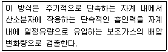
- 질코니아 방식
- 담벨형 방식
- 압력검출형 방식
- 전극 방식
(정답률: 62%)
76. 다음은 굴뚝 배출가스 중 베릴륨 분석방법에 관한 설명이다. ( )안에 알맞은 것은?
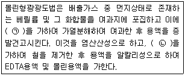
- ㉠ 황산, ㉡ 4-메틸-2펜타논
- ㉠ 황산, ㉡ 디티존사염화탄소용액(0.0⑤W/V%)
- ㉠ 질산, ㉡ 4-메틸-2펜타논
- ㉠ 질산, ㉡ 디티존사염화탄소용액(0.0⑤W/V%)
(정답률: 43%)
77. 굴뚝 배출가스 중의 금속화합물을 원자흡수분광광도법으로 분석할 때 굴뚝 배출가스의 온도가 500~1000℃일 경우에 사용하는 원통여과지로 가장 적합한 것은?(오류 신고가 접수된 문제입니다. 반드시 정답과 해설을 확인하시기 바랍니다.)
- 유리 섬유제 원통여과지
- 석영 섬유제 원통여과지
- 설룰로스 섬유제 원통여과지
- 고무 섬유제 원통여과지
(정답률: 54%)
78. A 굴뚝 배출가스의 유속을 피토우관으로 측정하였다. 배출가스 온도는 120℃, 동압측정 시 확대율이 10배되는 경사 마노미터를 사용하였고, 그 내부액은 비중이 0.85의 톨루엔을 사용하여 경사마노미터의 액주로 측정한 동압은 45mm·톨루엔주 이었다. 이 때의 배출가스 유속은? (단, 피토우관의 계수 : 0.9594, 배출가스의 표준상태에서의 밀도 : 1.3kg/Sm3)
- 약 7.8 m/s
- 약 8.7 m/s
- 약 9.5 m/s
- 약 10.2 m/s
(정답률: 41%)
79. 자외선/가시선분광법으로 측정한 A물질의 투과퍼센트 지시치가 25%일 때 A물질의 흡광도는?
- 0.25
- 0.50
- 0.60
- 0.82
(정답률: 57%)
80. 굴뚝 배출가스 중 카드뮴을 원자흡수분광광도법(원자흡광광도법)으로 분석하려고 한다. 채취한 시료에 유기물이 함유되지 않았을 경우 분석용 시료용액의 전처리방법으로 가장 적합한 것은?
- 질산법
- 과망간산칼륨법
- 질산-과산화수소수법
- 저온회화법
(정답률: 42%)
5과목: 대기환경관계법규
81. 환경정책기본법령상 SO2의 대기환경기준으로 옳은 것은? (단, ㉠ 연간평균치, ㉡ 24시간평균치, ㉢ 1시간평균치)
- ㉠ 0.02ppm 이하, ㉡ 0.⑤ppm 이하, ㉢ 0.15ppm 이하
- ㉠ 0.03ppm 이하, ㉡ 0.06ppm 이하, ㉢ 0.10ppm 이하
- ㉠ 0.⑤ppm 이하, ㉡ 0.10ppm 이하, ㉢ 0.12ppm 이하
- ㉠ 0.06ppm 이하, ㉡ 0.1ppm 이하, ㉢ 0.12ppm 이하
(정답률: 53%)
82. 대기환경보전법규상 자동차의 종류에 대한 설명으로 틀린 것은? (단, 2015년 12월 10일 이후 적용)
- 이륜자동차의 규모는 차량총중량이 1천킬로그램을 초과하지 않는 것이다.
- 이륜자동차는 측차를 붙인 이륜자동차와 이륜자동차에서 파생된 삼륜 이상의 자동차는 제외한다.
- 소형화물자동차에는 승용자동차에 해당되지 않는 승차인원이 9인 이상인 승합차를 포함한다.
- 초대형 승용자동차의 규모는 차량총중량이 15톤 이상이다.
(정답률: 59%)
83. 대기환경보전법령상 천재지변 등으로 인해 기본부과금을 납부할 수 없다고 인정되어 징수유예를 하고자 하는 경우 ㉠ 징수유예기간 과 ㉡ 그 기간중의 분할납부의 횟수는?
- ㉠ 유예한 날의 다음날부터 다음 부과기간의 개시일 전일까지, ㉡ 4회 이내
- ㉠ 유예한 날의 다음날부터 2년 이내, ㉡ 12회 이내
- ㉠ 유예한 날의 다음날부터 3년 이내, ㉡ 12회 이내
- ㉠ 유예한 날의 다음날부터 다음 부과기간의 개시일 전일까지, ㉡ 6회 이내
(정답률: 44%)
84. 악취방지법규상 지정악취물질에 해당하지 않는 것은?
- 염화수소
- 메틸에틸케톤
- 프로피온산
- 뷰틸아세테이트
(정답률: 56%)
85. 대기환경보전법상 '대기오염물질'의 정의로서 가장 적합한 것은?
- 연소시에 발생하는 유리탄소를 주로 하는 미세한 입자상물질로서 환경부령이 정하는 것
- 연소시에 발생하는 유리탄소가 응결하여 입자의 지름이 1미크론 이상이 되는 물질로서 환경부령이 정하는 것
- 대기 중에 존재하는 물질 중 대기오염물질에 대한 심사·평가결과 대기오염의 원인으로 인정된 가스·입자상물질로서 환경부령으로 정하는 것
- 물질의 연소·합성·분해 시에 발생하는 고체상 또는 액체상의 물질로서 환경부령이 정하는 것
(정답률: 62%)
86. 대기환경보전법규상 특정대기유해물질에 해당하지 않는 것은?
- 수은 및 그 화합물
- 아세트알데히드
- 황산화물
- 아닐린
(정답률: 47%)
87. 대기환경보전법상 대기환경규제지역을 관할하는 시·도지사 등은 그 지역이 대기환경규제지역으로 지정·고시된 후 몇 년 이내에 그 지역의 환경기준을 달성·유지하기 위한 계획을 수립·시행하여야 하는가?
- 5년 이내에
- 3년 이내에
- 2년 이내에
- 1년 이내에
(정답률: 32%)
88. 대기환경보전법규상 한국환경공단이 환경부장관에게 보고해야할 위탁업무 보고사항 중'자동차 배출가스 인증생략 현황'의 보고 횟수 기준은?
- 수시
- 연 1회
- 연 2회
- 연 4회
(정답률: 47%)
89. 대기환경보전법령상 Ⅲ지역(녹지지역 및 자연환경보전지역)의 기본부과금의 지역별 부과계수는?
- 0.5
- 1.0
- 1.5
- 2.0
(정답률: 52%)
90. 다음은 대기환경보전법규상 첨가제 제조기준이다. ( )안에 알맞은 것은?
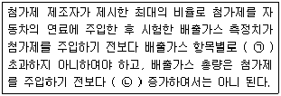
- ㉠ 10% 이상, ㉡ 5% 이상
- ㉠ 5% 이상, ㉡ 5% 이상
- ㉠ 5% 이상, ㉡ 3% 이상
- ㉠ 5% 이상, ㉡ 1% 이상
(정답률: 46%)
91. 다중이용시설 등의 실내공기질 관리법령상 대통령령이 정하는 규모의 다중 이용시설에 해당되지 않는 것은?
- 여객자동차터미널의 연면적 2천2백제곱미터인 대합실
- 공항시설 중 연면적 1천1백제곱미터인 여객터미널
- 철도역사의 연면적 2천2백제곱미터인 대합실
- 모든 지하역사
(정답률: 54%)
92. 대기환경보전법령상 초과부과금 산정의 기초가 되는 오염물질 또는 배출물질의 배출기간이 달라지게 된 경우 초과부과금의 조정부과나 환급은 해당 배출시설 또는 방지시설의 개선완료 등의 이행여부를 확인한 날로부터 최대 며칠 이내에 하여야 하는가?
- 7일 이내
- 15일 이내
- 30일 이내
- 60일 이내
(정답률: 41%)
93. 대기환경보전법규상 자동차 연료 제조기준 중 매년 6월 1일부터 8월 31일까지 출고되는 휘발유의 증기압(kPa, 37.8℃) 기준으로 옳은 것은?
- 100 이하
- 80 이하
- 65 이하
- 60 이하
(정답률: 25%)
94. 환경정책기본법령상 환경기준으로 옳은 것은? (단, ㉠, ㉡은 대기환경기준, ㉢, ㉣은 수질 및 수생태계'하천'에서의 사람의 건강보호기준)
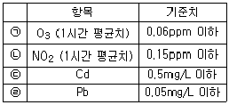
- ㉠
- ㉡
- ㉢
- ㉣
(정답률: 43%)
95. 다중이용시설 등의 실내공기질 관리법상 다중이용시설을 설치하는 자는 환경부장관이 고시한 오염물질방출건축자재를 사용하여서는 안 되는데, 이 규정을 위반하여 사용한 자에 대한 과태료 부과기준으로 옳은 것은?
- 1천만원 이하의 과태료에 처한다.
- 500만원 이하의 과태료에 처한다.
- 300만원 이하의 과태료에 처한다.
- 100만원 이하의 과태료에 처한다.
(정답률: 41%)
96. 다중이용시설 등의 실내공기질 관리법규상 신축공동주택의 오염물질 항목별 실내공기질 권고기준으로 옳지 않은 것은?
- 폼알데하이드 : 300㎍/m3 이하
- 에틸벤젠 : 360㎍/m3 이하
- 자일렌 : 700㎍/m3 이하
- 벤젠 : 30㎍/m3 이하
(정답률: 56%)
97. 대기환경보전법령상 연료를 연소하여 황산화물을 배출하는 시설의 기본부과금의 농도별 부과계수로 옳은 것은? (단, 연료의 황함유량(%)은 1.0% 이하, 황산화물의 배출량을 줄이기 위하여 방지시설을 설치한 경우와 생산 공정상 황산화물의 배출량이 줄어든다고 인정하는 경우 제외)
- 0.1
- 0.2
- 0.4
- 1.0
(정답률: 54%)
98. 대기환경보전법규상 수도권대기환경청장, 국립환경과학원장 또는 한국환경공단이 설치하는 대기오염 측정망에 해당하지 않는 것은?
- 대기오염물질의 지역배경농도를 측정하기 위한 교외대기측정망
- 산성 대기오염물질의 건성 및 습성 침착량을 측정하기 위한 산성강하물측정망
- 도시지역의 휘발성유기화합물 등의 농도를 측정하기 위한 광화학대기오염물질측정망
- 도시지역의 대기오염물질 농도를 측정하기 위한 도시대기측정망
(정답률: 53%)
99. 대기환경보전법규상 환경기술인의 신규교육시기와 횟수 기준은? (단, 규정된 교육기관이며, 정보통신매체를 이용하여 원격교육을 하는 경우 제외)
- 환경기술인으로 임명된 날부터 6개월 이내에 1회
- 환경기술인으로 임명된 날부터 1년 이내에 1회
- 환경기술인으로 임명된 날부터 2년 이내에 1회
- 환경기술인으로 임명된 날부터 3년 이내에 1회
(정답률: 54%)
100. 대기환경보전법상 방지시설을 거치지 아니하고 오염물질을 배출할 수 있는 공기조절장치, 가지배출관 등을 설치한 행위를 한 자에 대한 벌칙기준으로 적합한 것은?(관련 규정 개정전 문제로 여기서는 기존 정답인 3번을 누르면 정답 처리 됩니다. 자세한 내용은 해설을 참고하세요.)
- 2년 이하의 징역이나 1천만원 이하의 벌금에 처한다.
- 3년 이하의 징역이나 2천만원 이하의 벌금에 처한다.
- 5년 이하의 징역이나 3천만원 이하의 벌금에 처한다.
- 7년 이하의 징역이나 5천만원 이하의 벌금에 처한다.
(정답률: 59%)